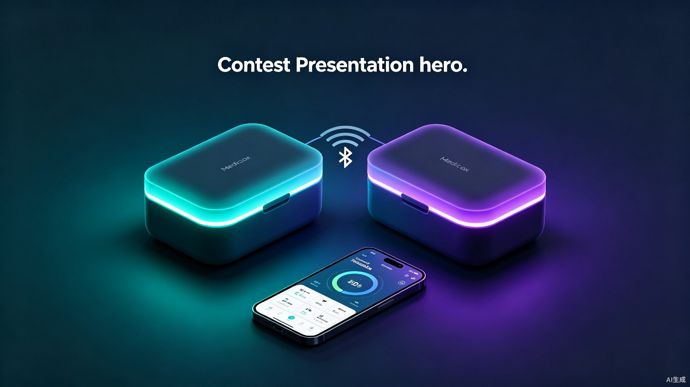
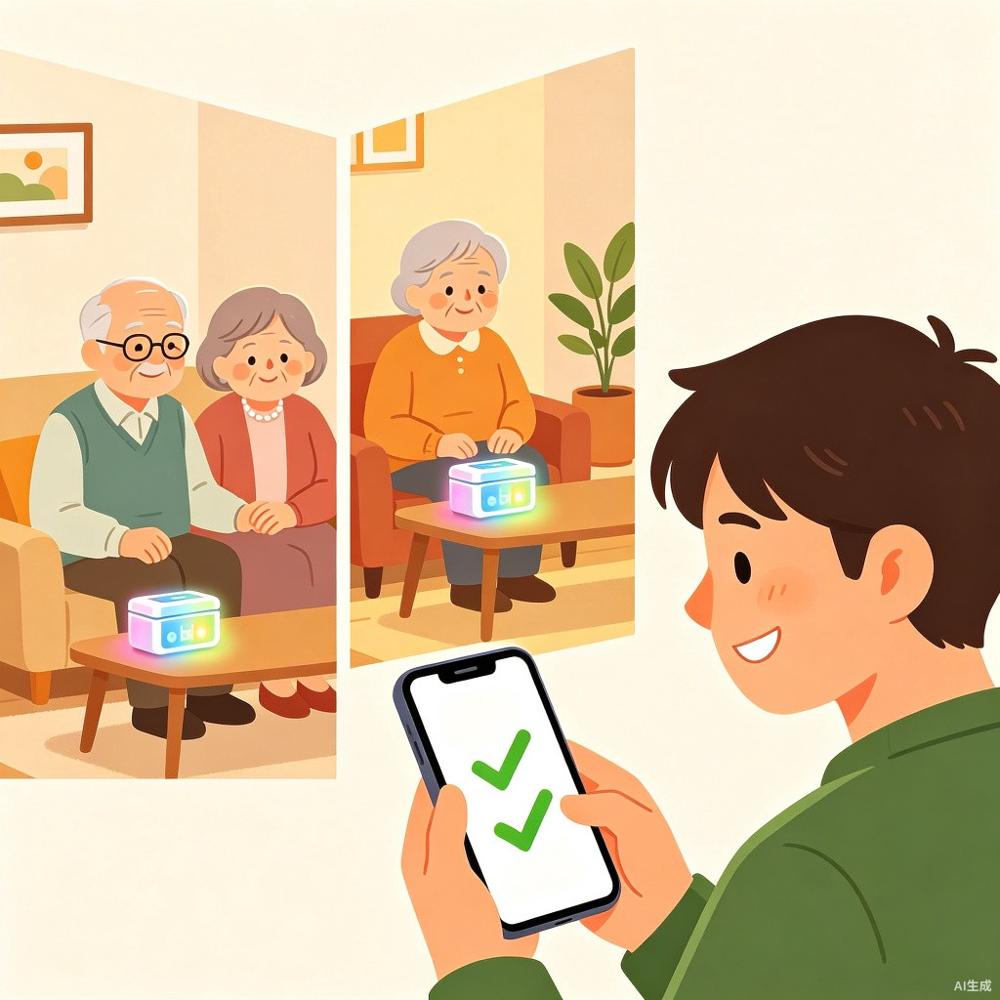

01项目概述
AuraPair是一款面向与子女分居两地的老年夫妇的智能药盒系统，核心定位是「双人守护」——两个独立的物理药盒（Box A 爸爸用、Box B 妈妈用），通过一个统一的手机 App 管理，实现物理独立、信息统一的服药安全保障。
产品遵循「吃了 = 无感记录，没吃 = AI 先处理，处理不了才叫家人」的低扰动设计哲学。药盒不会频繁打扰老人，只在必要时通过 App 通知子女，避免提醒疲劳导致的用户流失。
02用户画像

03市场痛点与数据
中国 65 岁以上老年人超过 2.17 亿，其中 70.8% 存在多重用药（同时服用 5 种以上药物），但服药依从率不足 40%。[1][2]用药不依从导致的药物不良反应（ADR）事件逐年上升，已成为老年人住院的首要可预防原因。
现有的智能药盒产品普遍存在「重提醒、轻体验」的问题——频繁推送通知导致老人和子女都感到厌烦，是用户流失的首要原因。76 岁以上老年人 AI 工具使用率已达 42.5%，说明老年群体并不排斥技术，关键是降低使用门槛。[3]
04核心创新点
双人守护 — 品牌锚点
两个独立药盒 + 统一 App 管理。老人各自在家吃药，子女一个界面看到两人的状态。物理分离、信息聚合，解决了老年夫妇药物不同、时间不同的核心痛点。
低扰动策略 — 反直觉设计
「吃了 = 无感记录，没吃 = 先本地提醒，再上报」。老人准时吃药时零打扰，只在超时后逐步升级：LED 呼吸 → 蜂鸣 → 通知子女。拒绝「保姆式」服务。
霍尔传感 — 诚实检测
用霍尔传感器检测开盖动作，而非摄像头拍照或语音确认。承认「开盖 ≠ 吞服」的局限，但这是侵入性最低的方案。过于精确的验证反而适得其反。
智能合并通知 — 子女友好
两人都按时吃 → 无通知。一人漏服 → 单独提醒对应子女。两人都漏服 → 合并一条摘要通知。避免通知轰炸，降低子女焦虑。
低扰动通知策略演示
场景 A：两人都按时吃
老人无感知
子女零通知
场景 B：爸爸漏服
爸爸药盒红色闪烁
子女收到单条提醒
场景 C：两人都漏服
两个药盒红色常亮
子女收到合并摘要
05系统架构
系统采用「硬件感知层 → BLE 传输层 → App + 云端服务层」三层架构，硬件端完成全部时间敏感的提醒逻辑，App 端负责数据展示、计划管理和智能通知合并。
flowchart TB
subgraph HW["硬件感知层（ESP32-S3）"]
H1[霍尔传感器 x3] -->|中断| H2[传感器管理器]
H2 -->|开盖事件| H3[提醒引擎状态机]
H3 -->|PWM| H4[RGB LED]
H3 -->|GPIO| H5[蜂鸣器]
H3 -->|读写| H6[Flash 存储]
H6 <-->|计划/日志| H3
end
subgraph BLE["BLE 传输层（NimBLE）"]
B1[GATT Server] <-->|6个特征值| B2[Binary Packet]
B2 <-->|XOR校验| B3[低功耗广播]
end
subgraph APP["App + 云端服务层"]
A1[React Native App] <-->|蓝牙| B3
A1 -->|REST API| A2[Node.js 后端]
A2 -->|PostgreSQL| A3[(数据库)]
A1 -->|推送| A4[智能通知合并]
A4 -->|摘要| A5[子女手机]
end
H3 <--> B1
06硬件设计
主控芯片：ESP32-S3
选择 ESP32-S3 作为主控芯片，原因：内置 WiFi + BLE 5.0 双模通信、支持 AI 向量指令（未来可扩展语音交互）、25 元级成本、成熟的 Arduino 生态和 PlatformIO 工具链。
引脚分配
提醒状态机
每个服药计划每天独立走一遍 7 状态流程，由提醒引擎每秒 tick 一次推进：
stateDiagram-v2
[*] --> IDLE: 每日重置
IDLE --> PRE_REMIND: T - 5min
PRE_REMIND --> WAITING: T (目标时间)
WAITING --> COMPLETED: 开盖 ✓
WAITING --> MISSED_1: T + 30min
MISSED_1 --> COMPLETED: 开盖 ✓
MISSED_1 --> MISSED_2: T + 90min
MISSED_2 --> COMPLETED: 开盖 ✓
MISSED_2 --> NOTIFIED: 上报 App
COMPLETED --> [*]: 当日结束
NOTIFIED --> [*]: 当日结束
关键设计决策：我们选择霍尔传感器检测「开盖」而非验证「吞服」，因为过度精确的验证（如拍照识别）会严重侵犯老人隐私且增加操作复杂度。开盖是最自然的服药动作，误报率低，且老人无需任何额外操作。
LED 药仓颜色编码
07BLE 通信协议
使用 NimBLE-Arduino 库实现轻量级 BLE 5.0 GATT 服务器，自定义 Service 包含 6 个特征值，覆盖状态上报、命令控制、计划同步、日志上传、时间同步和设备信息读取。
| 特征值 | 属性 | 功能 | 数据格式 |
|---|---|---|---|
0x...002 |
Notify | 实时状态上报 | [0xAA][0x01][scheduleId][status][compartment][XOR] |
0x...003 |
Write | App 控制命令 | [cmd][payload...]：0x01=同步状态 / 0x02=手动标记 / 0x03=上传日志 |
0x...004 |
Write | 服药计划同步 | 每条 5 字节：[id][compartment][hour][minute][active] |
0x...005 |
Notify | 服药记录上传 | 每条 14 字节：[0xAA][0x02][id][comp][status][time_s 4B][time_a 4B][XOR] |
0x...006 |
Write | 时间同步 | Unix 时间戳（4 字节 little-endian） |
0x...007 |
Read | 设备信息 | JSON：{"device":"AuraPair-Box-v1","firmware":"1.0.0","mac":"..."} |
通信时序
sequenceDiagram
participant App as 手机 App
participant Box as 药盒 (ESP32-S3)
participant Cloud as 云端服务
App->>Box: BLE 连接
Box-->>App: 设备信息 (Read 0x007)
App->>Box: 时间同步 (Write 0x006)
App->>Box: 服药计划 (Write 0x004)
App->>Box: 请求状态同步 (Write 0x003: 0x01)
Note over Box: 状态机运行中...
Box-->>App: 状态变更通知 (Notify 0x002)
Box-->>App: 状态变更通知 (Notify 0x002)
App->>Box: 请求上传日志 (Write 0x003: 0x03)
Box-->>App: 日志批次 (Notify 0x005) x N
App->>Cloud: 同步日志 (REST API)
Cloud->>Cloud: 智能通知合并
Cloud-->>App: 推送通知给子女
08固件代码架构
固件基于 PlatformIO + Arduino 框架，使用 NimBLE-Arduino 替代官方 BLE 库以降低内存占用。代码模块化设计，共 10 个源文件：
| 文件 | 职责 | 关键能力 |
|---|---|---|
platformio.ini | 项目配置 | ESP32-S3 目标板 + NimBLE 依赖 |
config.h | 全局配置 | 引脚定义、BLE UUID、提醒时间常量 |
storage.h/cpp | 存储管理 | Preferences 闪存读写（计划 + 日志环形缓冲） |
sensor_manager.h/cpp | 传感器管理 | 3 路霍尔传感器中断 + 500ms 消抖 |
led_manager.h/cpp | LED 管理 | RGB PWM 呼吸灯 / 闪烁 / 常亮 4 种模式 |
ble_manager.h/cpp | BLE 服务 | NimBLE GATT Server + 6 个特征值 |
reminder_engine.h/cpp | 提醒引擎 | 7 状态机核心 + 非阻塞蜂鸣器 + 日期自动重置 |
main.cpp | 主入口 | 模块初始化 + 20Hz 主循环 + BLE 回调处理 |
主循环设计
// main.cpp — 核心循环仅 3 行，所有逻辑由模块内部管理
void loop() {
led.tick(); // LED 动画帧更新（呼吸/闪烁）
engine.tick(); // 提醒引擎状态机（内部 1Hz 节拍）
delay(50); // 20Hz 循环，兼顾响应与功耗
}非阻塞设计要点
09App 软件设计
App 端使用 React + TypeScript 构建，后端 Node.js + PostgreSQL。核心功能包括双药盒绑定管理、服药计划配置、实时状态同步和智能通知合并。
核心功能模块
TypeScript 核心接口
// 老人信息
interface Elder {
id: string;
name: string;
boxId: string; // 绑定的药盒 MAC
avatar?: string;
}
// 服药计划
interface Medication {
id: string;
elderId: string;
name: string;
compartment: number; // 1=早 2=午 3=晚
scheduledTime: string; // "08:00"
active: boolean;
}
// 服药记录
interface IntakeLog {
id: string;
medicationId: string;
scheduledTime: Date;
actualTime: Date | null;
status: 'on_time' | 'late' | 'missed';
}10竞品对比分析
与市场上主流智能药盒产品相比，AuraPair 在双人管理、低扰动设计、硬件成本三个维度具有显著差异化优势。
| 维度 | AuraPair | MEMO BOX | 小米 HiPee | Medisafe |
|---|---|---|---|---|
| 双人独立管理 | ✓ 两盒统一 | ✗ | ✗ | 部分支持 |
| 低扰动提醒 | ✓ 渐进式 | 频繁提醒 | 频繁提醒 | 可配置 |
| 通知合并 | ✓ | ✗ | ✗ | ✗ |
| 硬件成本 | ~99 元/盒 | ~299 元 | ~199 元 | 纯软件 |
| 隐私保护 | ✓ 无摄像头 | 有摄像头 | 无 | N/A |
| 离线可用 | ✓ 本地状态机 | 部分 | 依赖云 | 依赖云 |
11技术栈总结
硬件端
软件端
开发工具
12赛道契合度
本项目紧扣「社会公益附加赛题 — 智慧助老」方向，从真实社会问题出发，以技术创新解决老年人用药安全的实际痛点：